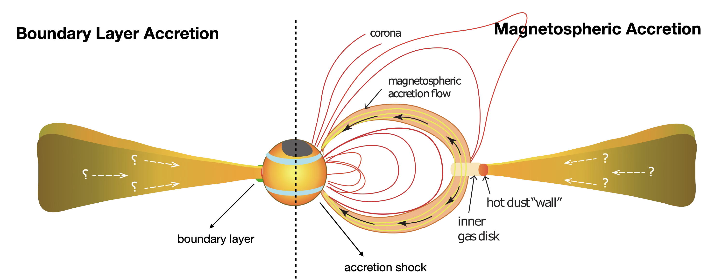
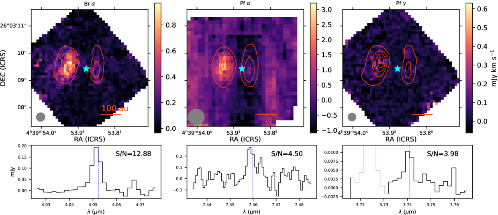

Accretion in Embedded Protostars.
There are two primary accretion mechanisms that could be occuring in protostars. In magnetospheric accretion, material flows along magnetic field lines from the inner disk onto the surface of the protostar. However, if the accretion is strong enough it is possible that it can overwhelm and crush the magnetosphere, leading to boundary layer accretion where the accretion disk extends all the way to the stellar surface.

Using JWST MIRI MRS and NIRSpec observations of the Class 0 protostar L1527IRS, we detected accretion tracing atomic hydrogen lines. This indicated that accretion was likely occuring via the magnetosphere rather than a boundary layer. Additionally, analysis of the Br α luminosity has indicated that the accretion rate is too low to explain the current estimated mass of L1527IRS assuming a constant accretion rate. This suggets that the accretion must of been higher at some point in the sources history, supporting theories that protostellar accretion is non-steady rather than smooth.
